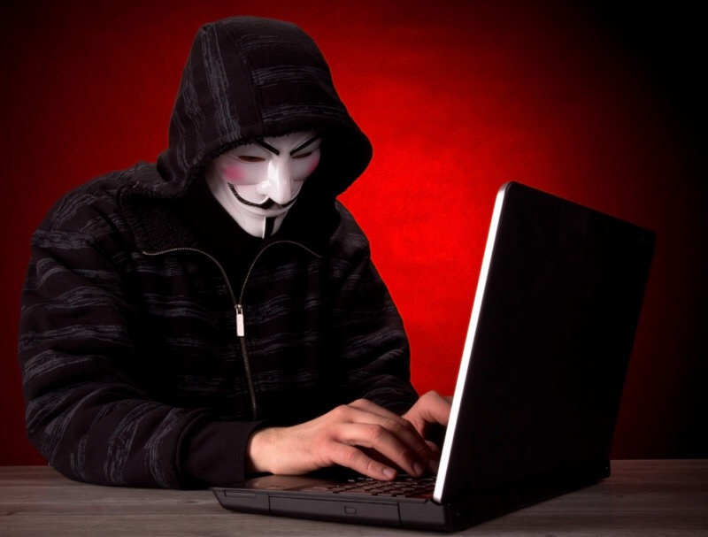
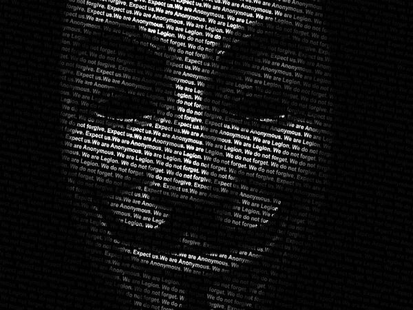

Ни для кого не секрет, что ICQ сегодня принадлежит Mailru Group ( в народе FSB Group), ICQ записывает все
ваши
сообщения, которые потом анализируют аналитики различных спецслужб, пытаясь найти зацепки, с помощью которых
можно
выйти на Вас.
Вы используете 2 VPN, три сокса, это очень хорошо и правильно, но во-первых:
всегда думайте у кого вы покупаете ВПН, насколько порядочен этот человек. В 2004 году в октябре в США
прошла
спецоперация Firewall, в ходе которой было арестовано 28 человек, в основном граждан США, они были
нормальными
людьми,
надежными партнерами, использовали ВПН сервис, не болтали лишнего, но они не могли подумать, что
администратор
форума с
ником «Cumbajohnny», который был завербован ФБР, специально создал этот VPN сервис для поимки юзеров,
которые
использовали соксы и прокси, и логи не давали возможности их найти. Не хочу и тень сомнения кинуть на
продавцов
VPN, но
необходимо просчитывать все варианты.
Совет – покупать свой сервер и ставить там ВПН, либо пользоваться сервисами очень проверенных людей.
Вести свою переписку так, как будто её читают федеральные агенты, то есть, не писать места, где вы
бываете и
живете,
куда едете отдыхать, не поздравлять друг друга с днём рождения, не писать есть ли у вас кот или
собака, и сколько
лет
вашей маме, ни в коем случае не писать номера телефонов и домашний адрес, помните, всё это может
оказаться в руках
федералов, и всё это будет зацепкой к Вашему аресту. Вы скажите, что у вас личный джабер сервер? Но
могут
арестовать
вашего коллегу, открыть его машину, и там найти всю переписку.
Например в штатах логи по ICQ считаются доказательством, и прокурору не составит труда доказать
присяжным, что
переписка
найденная на Вашем компьютере принадлежит именно Вам.
использовать отдельный интернет, благо сейчас это возможно, чтобы, если Вы случайно зашли в ICQ,
форум, Jabber
с
своего айпишника, а такое бывает у 90% людей, Вы могли выбросить модем, и купить новый, а не сидеть и
думать, что
же
будет, а может никто не заметил.
Никогда не встречайтесь с другими членами
лично, и
не созванивайтесь в скайпе по видео связи. Некоторые
подумают,
ведь я работаю с ним уже 4 года, как хорошо было бы встретится и выпить пиво? Ведь он классный парень,
никогда не
подводил, и просто шикарный человек. Но, представьте, если этого человека арестуют, уверены ли вы на 100%,
что он
не
пойдёт в сознанку и не расскажет о Вашей встрече с ним, не даст Ваш телефон, не опишет Вашу внешность, и в
конце
концов
не опознает Вас на очной ставке?
Статистика показала, что будет именно так в 85% случаев. Люди забывают о принципах, о понятиях, о
элементарной
дружбе,
они забывают, что вчера благодаря Вам они купили себе квартиру. Когда дело касается возможного ограничения
свободы, то
все забывают обо всём, и готовы рассказать даже того, чего не было, только чтобы их не арестовали, и дать
любые
показания в обмен на свою свободу или сокращение срока ареста. Духовитых людей в наше время крайне мало. Они
не
думают о
Вашей семье, о Ваших детях, их интересует только личная свобода, и таких людей большинство порядка 90%, было
и
будет во
все времена. Если Вы всё таки плюнули на 3 правило, и встретились, то не вздумайте хотя бы
фотографироваться.
Завтра ваш
коллега захочет похвастаться, как классно он погулял, а особенно показать с кем, повысив тем самым свой
авторитет,
и
рано или поздно эта фотография окажется там, где ей быть не нужно.
В месте, откуда Вы заходите в Интернет и работаете, всё должно быть именно так, как-будто через 2 часа у
Вас
будет
обыск. То есть, у вас не должны валяться кредитные карты под матрацем, я думаю у некоторых дома имеются CD,
где
записаны
какие-то файлы, сканы паспортов, информация о кредитных картах, которую когда-то зачем-то записали, и
забыли.
Левых
паспортов, печатей, документов, не должно быть также на Вашем рабочем месте. Так как даже, если не смогут
открыть
Ваш
компьютер, то всего найденного хватит, чтобы доказать Вашу вину. Если у Вас имеются суммы налички,
рекомендую
иметь дома
секретный сейф.

У вас не должно быть крупных сумм денег на вашем рабочем месте. Если всё таки такие суммы появляются в
Вашей
квартире, у вас должен быть секретный сейф, о котором не знают близкие друзья и родственники. Иначе, в
случае
обыска, и
занесения этих средств в протокол, Вам будет сложнее объяснить откуда, у не работающего студента оказалось
200 000
долларов.
Как лучшего всего хранить деньги. Рекомендую деньги хранить у кровных родственников ( мама, папа). Так как
обыск
может
пройти и у них, им рекомендуется класть деньги в ячейки, причём документы о наличии ячейки, должны также
оставаться в
этой же ячейки.
Помните, что Ваша супруга или супруг, являются 50% владельцами всего Вашего имущество нажитого после
регистрации
Вашего
брака. Следовательно, в случае, если Вы оформили свою квартиру на жену, и Вас осудили с конфискацией, то
государство
продаст эту квартиру и 50% суммы вернет жене, только эта сумма будет очень маленькой и не рыночной.
Поэтому советую оформлять всю недвижимость на Ваших родственников ( не путать с родственниками жены).
Если Вы решили поехать отдохнуть за границу, не следует об этом писать всем своим коллегам, так как Ваш uin
или
джабер может мониторится, и к Вашему приезду Вас будут ждать. Не рекомендуется брать с собой ноутбук, всех
денег
не
заработать, а во-вторых именно этот ноутбук сможет оказаться доказательством против Вас. Если Вы всё таки
едете
отдыхать, помните, что практически любая страна выдаст Вас США, особенно такие страны, как Тайланд, Франция,
Германия,
другие страны Европы, имеющие договоры об экстрадиции. Лучше отдыхать в странах, у которых нет с США
дипломатических
отношения, либо эти отношения не хорошие ( Иран, Венесуэла, Куба, Боливия, Белоруссия, Китай итд). Но,
именно так
думал
один парень из Эстонии, который полетел отдыхать прямым рейсом в одну из стран, с которой у США плохие
отношения,
но его
самолёт развернули и попросили приземлиться в аэропорту Германии, где его и арестовали и экстрадировали.
Поэтому,
все
Ваши поездки на Ваш страх и риск.
Если Вас арестовали не стоит устраивать панику, вы знали на что Вы идёте, и осознавали последствия.
Во-первых
никогда
не признавайте свою вину, даже, если против Вас открытый ноутбук с всеми доказательствами, грамотный адвокат
сможет
доказать, что при обыске не был переписан номер вашего жесткого диска, либо, что всё это Вам закачал кто-то
через
интернет, затроянив вашу машину, и так далее. Признавать вину последнее дело. Если Вы признаете вину, то
дальше,
дабы
смягчить Вам наказание, Вам предложат сдать подельников – жить предателем и стукачом для нормального
человека не
нормально.
У Вас должен быть на примете адвокат, к которому Вы сможете обратится. Хороших адвокатов мало, примерно 1-2
на
сотню,
поэтому постарайтесь подобрать такого адвоката заранее. И конечно же не тратьте все деньги, так как в черный
день
они
вам могут очень понадобится. Легче всего сидеть и думать, что это коснётся кого угодно, но не меня, но те,
кто
думает
именно так, остаются неподготовленными, и очень сожалеют о том, что не думали заранее.
Ваш диск обязательно должен быть закриптован. По моей информации Бесткрипт открыть не могут, по крайней
мере, в
своей практике не встречал, ФБР иногда может открыть ПГП, видимо зависит от версий программы, с Бесткрипт
даже у
них вроде бы не получается.
Лучше всего поставить Бесткрипт, а внутри его ПГП, а ещё лучше всего купить оборудование, которое уничтожит
Ваш
диск током при нажатии на брелок с расстояния 50 метров, такое сегодня можно свободно купить в рунете, тогда
и
расшифровывать будет нечего.
Если к Вам ломятся в дверь, не открывайте, достаньте жесткий диск и разбейте его топором на мелкие части и
слейте
их в унитаз. На суде никого не будет интересовать, почему вы не открывали дверь, как говорится не после
драки
кулаками не машут.

согласно конституции любой страны вы имеете право не давать показаний против себя, и своих родственников,
воспользуйтесь этим правом, не давайте никаких объяснений и прочего до прихода адвоката. никогда не
соглашайтесь
на «хорошего» адвоката от следователя, который просто по дружбе хочет вам помочь и дать надежного адвоката.
не
подписывайте протокол обыска, иначе вы подтверждаете, что все найденное принадлежит вам и было найдено в
вашей
квартире, без вашей подписи вы сможете настаивать, что таких вещей в вашей квартире не было. ещё лучше
написать об
этом в протоколе «этого и этого, в моей квартире никогда не было и подброшено мне сотрудниками милиции»
в каждой камере в тюрьме есть стукач, даже если эта камера на 2 человек, и вы один из них, значит второй
100%
стукач. стукачи работают на тюремную администрацию, за что получают возможность условно-досрочного
освобождения, и
различные другие блага. поэтому не забывайте об этом, если вы оказались в камере. были случаи, когда сосед
по
камере давал показания в суде, в качестве свидетеля, и рассказывал о том, что слышал в камере. стукачи
бывают двух
видов тупые и поумнее, тупые напрямую начинают интересоваться деталями вашего дела, те, кто поумнее
рассказывают
похожие ситуации из своей жизни, рассказывают, как их арестовывали, и вы автоматом хотите им рассказать о
ваших
деталях по делу. они работают по системе «раскройся сам – и узнаешь всё, что тебя интересует», то есть
раскрываясь
сами, они получают ваше доверие, и вы автоматом хотите с ними поделится своей историей.
Конечно, на двух страницах тяжело передать всё, но надеюсь эти простые и полезные советы помогут вам в жизни!
Удачи вам, любви, и терпения!